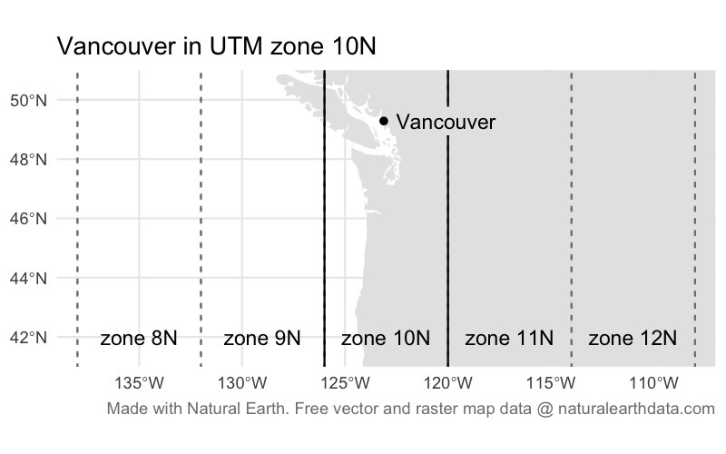
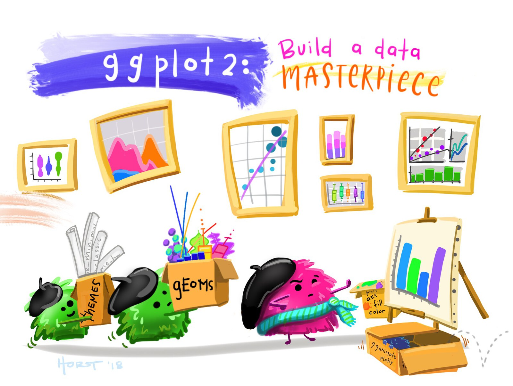
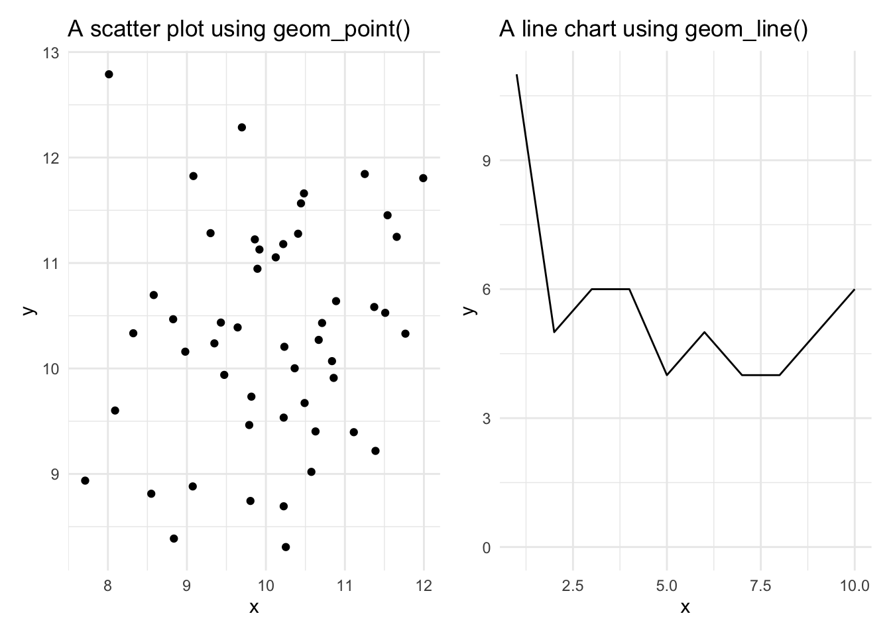
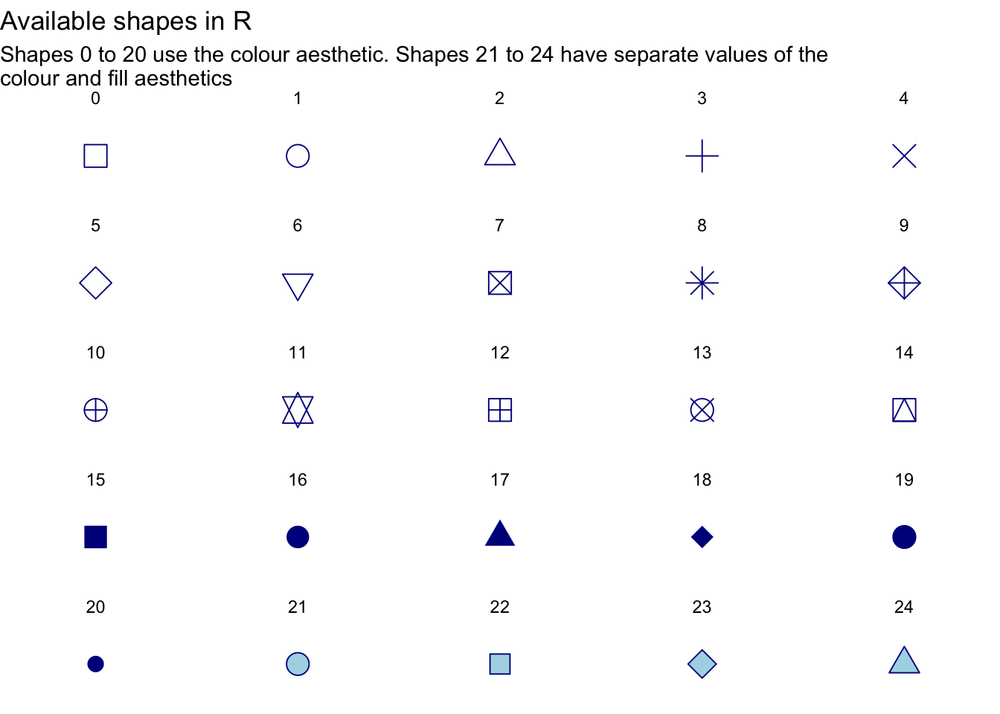

4 Your second crime map
This chapter guides you through the process of creating a crime map in R, focusing on each step in detail. You will learn how to work with spatial data, including how to load data and convert it into a format suitable for mapping. By the end of this chapter you’ll be able to visualize crime data effectively, creating a clear and accurate map. Let’s dive into the process and start mapping!
4.1 Introduction
In Chapter 2 we produced a simple map of a particular type of crime in a neighbourhood, but we skipped over a lot of the details of how to do it. In this chapter we will make another crime map, this time focusing more on each step in the process. We will then build on this in Chapter 6 to make a better crime map.
In this chapter (and Chapter 6) we will make a map of bicycle thefts in Vancouver in 2020. At the end of Chapter 6, the final map will look something like this.
Before we get into the detail of how to make this map, watch this video that goes over the main points of the code we will use. This video covers the code for both this chapter and Chapter 6.
4.2 Handling spatial data
Maps are visual representations of spatial data. Spatial data is special because each row in the data is associated with some geographic feature such as a building, a street or the boundary of a neighbourhood. This adds some quirks that we have to understand to work with spatial data successfully.
Maps are made up of multiple layers of spatial data that are styled to represent features of interest and then stacked on top of one another to make the finished map. Watch this video to learn more about spatial layers and the different types of data that we can use in maps.
Quiz
Which of the following best describes the three ways computers store spatial features?
What is the purpose of a base map in mapping?
What happens when too much detail is included on a map?
What is a raster layer?
Why is it common to store data about different types of features in separate files?
Points, lines and polygons in spatial data are known as geometric objects or simply geometries. Spatial data is data that has a geometric object (e.g. a pair of co-ordinates representing a crime location) associated with each row.
4.2.1 Representing places on the earth
With any spatial data, we need a way of describing where on the earth a particular point (such as the location of a crime or the corner of a building) is located. Watch this video to find out about the different co-ordinate systems we can use to do this.
Quiz
What are co-ordinates used for?
What is the geographic co-ordinate system based on?
Why are degrees of latitude and longitude difficult to use for everyday measurements?
What can happen if you use a co-ordinate system designed for a different part of the globe?
What is a practical way to find out which co-ordinate system a dataset uses if it’s not embedded in the file?
4.3 Spatial data in R

There are several packages that handle raster map data from different sources – one of them is the ggspatial package that we have already used to load the base map of Atlanta for the homicide map we made in Chapter 2.

Vector data can be handled in R using functions from the sf package. SF stands for ‘simple features’, which is a standard for storing spatial data. SF objects are data frames that have a special column to hold the geometry (point, line or polygon) associated with each row in the data. SF objects also understand what co-ordinate system the geometry are described in. This means SF objects can be transformed between co-ordinate systems and combined together in layers on a map.
There a lots of functions in the sf package for handling spatial data. Almost all of these functions begin with the letters st_ (e.g. st_read()), which makes it easy to identify that those functions are designed to be used on SF objects.
Functions in the sf package start with the letters
st_
The names of almost all functions in the sf package start with the letters st_, not the letters sf_.
4.3.1 Reading spatial data
To get started, open a blank R script file (using File > New File > R Script), then save it with the name chapter_04.R. Now add the code needed to load the sf and tidyverse packages:
The special features of spatial data – needing to store geometries, details of the projection used etc. – mean that spatial data is often stored in special file formats. There are lots of spatial-data formats, but fortunately almost all of them can be read by the st_read() function. This means we do not need to learn a different function for each spatial-data format.
While datasets with line or polygon geometries must almost always be stored in specific spatial-data formats, point data can also be stored in common data formats such as Excel and CSV files. The data for this chapter is provided by the Vancouver Police Department in a CSV file (gzipped to reduce the file size). The file is located at:
https://mpjashby.github.io/crimemappingdata/vancouver_thefts.csv.gz
What does the
.gz at the end of this URL mean?
CSV files can hold very large amounts of data, but at the cost of the size of the file becoming very large. We can reduce the size of a CSV file (or most other types of file) by compressing the file. You may be familiar with .zip compressed files. Gzip is another way of compressing files. Gzipped files have the file extension .gz. read_csv() can automatically decompress gzipped files, so we can treat a gzipped CSV file just the same as an uncompressed CSV file.
Loading data from a CSV file
Thinking back to what we learned in Section 3.2, add a new line of code to the file chapter_04.R to load this dataset and store it in an object called thefts. If you need help, you can click the ‘Solution’ button below.
Since the data are stored in a regular CSV file, we can use the read_csv() function from the readr package to read the file, and the assignment operator <- to store the data in the object thefts. read_csv() can read directly from a URL, so there is no need to download the data first.
4.3.2 Reading data files from your computer
The data consists of 21,918 rows, each representing one theft. Before we can map this data, we will need to do some minor data wrangling to get it into the format we want.
So far we have created datasets by loading data directly from URLs, such as the URL for the Vancouver thefts data we loaded in the previous section. But we can also load datasets that are already stored on our own computers. To do this, we need to know the file path that specifies where a particular file is stored.
You might have encountered file paths before, but you may not. A typical file path looks like this on a Mac or Linux computer:
/Users/john_smith/Documents/Crime Mapping/vancouver_thefts.csvor like this on Windows:
C:\Users\john_smith\Documents\Crime Mapping\vancouver_thefts.csvThe important thing to note here is that computers store files such as vancouver_thefts.csv in folders (also called directories), which are themselves often stored inside larger folders, etc. A file path tells a computer where to find a particular file. The file paths above can be read as telling the computer to open the Users directory, then the john_smith directory, then the Documents directory, then the Crime Mapping directory, and finally the file vancouver_thefts.csv.
You can find the file path of a particular file by typing file.choose() in the R console. This will open a new window that allows you to search or browse for a particular file. When you choose the file, R will print the file path in the console.
The two file paths shown above are called absolute file paths, because they show the full location of a particular file on the computer. But there are two problems with absolute paths: they can be very long so they clutter up your code, and (more importantly) they are only correct for a specific computer. If you write an R script that includes either of the file paths above, then you give that file for me to run, the code will immediately produce an error because there is no directory /Users/john_smith on my computer.
We can deal with that problem in a few ways. The first is to use a relative path. This specifies the location of a file not on the computer as a whole, but relative to the directory we are currently working in. This working directory will depend on how your version of RStudio is configured, but you can find out the working directory by typing getwd() in the R console. This will print the absolute path of the working directory for whatever you are currently working on in RStudio.
Imagine our working directory is /Users/john_smith/Documents/Crime Mapping/. If we wanted to open the file /Users/john_smith/Documents/Crime Mapping/vancouver_thefts.csv, we could use the absolute file path:
However, since the file is stored in our current working directory, we could also open the file like this:
This works because when we provide a relative path (e.g. one that does not begin with / on Mac or C:\ on Windows), R treats the path as being relative to the current working directory. Since the file vancouver_thefts.csv is in the working directory, we don’t need to specify anything other than the file name.
If we wanted to read from a file that was in a directory within the working directory – e.g. /Users/john_smith/Documents/Crime Mapping/original_data/canada/vancouver_crime.gpkg – then we just need to specify where the file is relative to the working directory:
Important
File paths in your code can make it harder to make sure your code is portable, i.e. that it can be used by other people. This is because the file structure on someone else’s computer is likely to be different from the file structure on your computer.
You might think code portability doesn’t matter, because you are not planning to share your code with anyone. But it’s quite possible that you will want to:
- Re-use code yourself on a different computer, e.g. if you replace your current computer with a new one.
- Send the code to someone else to get help with a problem.
- Send the code to someone else who has asked for help from you.
To help keep your code portable:
- Where possible, include in your code any code needed to download the necessary data from the internet. This is what we most-often do in this course.
- If the data is not available online, you will need to distribute the data along with your code. In that case, tell anyone you send you code to that they should keep the code file and data files in the same directory, then you can just refer to each data file by its name (e.g.
read_csv("vancouver_thefts.csv")). - Avoid using absolute file paths in your code, since these will almost certainly produce an error if anyone tries to run your code on another computer.
4.3.3 Cleaning column names

Typos are one of the most frequent causes of errors in any coding language. One way to avoid typos is to follow some basic rules when we write code. We will learn more about these rules in Chapter 5, but for now we can just learn one rule: column names in datasets should use what is known as snake_case, i.e. they should be all lower case and words should be separated by underscore characters (_). This makes your code easier to read and means you don’t have to remember whether you called a column crime_count, crimecount, CrimeCount or CRIMECOUNT.

At the moment, the column names in the thefts dataset are upper-case letters. Rather than having to remember this, we can easily convert them to snake case using the clean_names() function from the janitor package. To use a function from a package, we usually first load the package using the pacman::p_load() function. In this case, we probably won’t want to use any other functions from the janitor package, so instead of loading the whole package we will use this one function directly. To do this, we write the function name with the package name added to the front, separated by two colons ::.
Add the code above to the chapter_04.R file and run that line of code. If you now run head(thefts) in the R Console, you will see that the data has stayed the same but all the column names are now in snake case. clean_names() would also have replaced any spaces with underscores, tried to separate words in the variable names and cleaned up several other potential problems. For this reason it is common to call janitor::clean_names() straight away after loading a dataset so that you can be confident that the column names will be in the format you expect.
If we wanted to use the clean_names() function again, we would have to include the package name and :: each time, so if our code was going to make repeated use of the function then it would probably be easier to load the package using the pacman::p_load() function as we have done in previous chapters.
4.3.4 Converting our data to an SF object
At present, the data in the thefts object is just a regular tibble. We could not use it to make a map because R does not know which columns represent the geometry, or what co-ordinate system the locations are recorded in. We can deal with this by converting the data to an SF object using the st_as_sf() function from the sf package.
The data provided by the Vancouver Police use the UTM zone 10N co-ordinate system. UTM is a system for assigning co-ordinates to any location on earth relative to a designated local reference point for the UTM zone covering that part of the planet. The ‘N’ at the end of the zone name 10N refers to the northern hemisphere.
Co-ordinate reference systems are specific to one part of the globe
In almost all cases, co-ordinate reference systems only work for the part of the world that they were designed for. So we should not use the UTM zone 10N co-ordinate system to map data outside the area for which it was designed (broadly speaking, the west coast of North America from Los Angeles to Vancouver, and the part of Canada directly north of Vancouver extending as far as the north pole). If we were to use the UTM zone 10N co-ordinate system for data from another part of the world, we would be very likely to get error messages or strange results.

We can convert the thefts tibble to an SF object using the st_as_sf() function (remember, all functions in the sf package start with st_, which can sometimes make the function names a little confusing). We specify which columns in the data represent the geometry (in this case, the x and y columns), and what co-ordinate system the data uses.
Co-ordinate systems can be specified in lots of ways (some very complicated), but the easiest is to specify the EPSG code for the relevant system. An EPSG code is a unique reference number for a particular co-ordinate system that R can look up in a database to get the information needed to display the data on a map. The EPSG code for the UTM zone 10N is EPSG:32610.
Add this code to the chapter_04.R file in RStudio.
If you look at the contents of the thefts_sf object by running head(thefts_sf) in the R Console, you’ll see that there is a new column called geometry. This column contains the co-ordinates of each bike theft. But crucially, it stores those co-ordinates in a format that R recognises represent specific locations on the surface of the earth, which means the co-ordinates can be used to make maps.
Important
It is important to remember that we should only use st_as_sf() to convert a non-spatial dataset (such as a tibble) into a spatial dataset (an SF object). If we use st_as_sf() on an object that is already an SF object, this can have unexpected results and lead to errors in your code.
The easy way to think about this is that if you have loaded a dataset with read_sf() or st_read() then you have already created an SF object, so you don’t need st_as_sf(). If you have loaded a dataset with any other function that reads data (such as read_csv() or read_excel()) then you will need to use st_as_sf() if you want to plot the data on a map. Most importantly, do not use st_as_sf() if you loaded a dataset with read_sf() or st_read().
4.3.5 Finding bike thefts in our data
Choosing only some rows in a dataset
If you look through the contents of the thefts_sf object by running head(thefts_sf) in the R Console, you will see that not all of the rows relate to bicycle thefts. The type column shows that the dataset also includes thefts from vehicles, for example. To choose only those rows containing bicycle thefts, which function from the dplyr package would we used? If you need help, you can think back to Chapter 3 or have a look at the Data transformation with dplyr cheat sheet.
Which function from the dplyr package should we use to remove all the rows from our dataset except those for bicycle thefts?
Add code to the chapter_04.R file to create a new object called bike_thefts that contains only the rows in the thefts_sf object that relate to bicycle theft. If you get stuck, you can hit the ‘Hint’ button below to get help, but try to find the answer on your own first! Once you’ve finished the code, click the ‘Solution’ button to check your code.
Use the filter() function to choose particular rows in a dataset. The syntax for filter() is filter(dataset, column_name == "value"). Replace dataset with the name of the SF object we created from the thefts tibble, column_name with the name of the column containing the offence type and value with the offence type for bicycle theft.
Our data is now ready for us to make our crime map!
So far in this chapter we have used several functions – read_csv(), clean_names(), st_as_sf() and filter() to produce an SF object representing the locations of bike thefts. Since we have done this step by step, we have created a different object to store the result produced by each function. But since we only need the final dataset, our code would be a lot easier to read if we used the pipe operator (|>) to run all these functions in one go. Delete the relevant lines from the chapter_04.R script file and replace them with this code:
chapter_04.R
# Load packages
pacman::p_load(sf, sfhotspot, tidyverse)
# Load and wrangle bike theft data
bike_thefts <- read_csv("https://mpjashby.github.io/crimemappingdata/vancouver_thefts.csv.gz") |>
janitor::clean_names() |>
st_as_sf(coords = c("x", "y"), crs = "EPSG:32610") |>
filter(type == "Theft of Bicycle")4.4 Producing maps in R
Now that we have our data, we can use it to create a map of bicycle theft in Vancouver. Before we start, let’s take another look at our dataset so that we know which columns contain which data.
Simple feature collection with 6 features and 8 fields
Geometry type: POINT
Dimension: XY
Bounding box: xmin: 488371.3 ymin: 5452696 xmax: 494295.1 ymax: 5458232
Projected CRS: WGS 84 / UTM zone 10N
# A tibble: 6 × 9
type year month day hour minute hundred_block neighbourhood
<chr> <dbl> <dbl> <dbl> <dbl> <dbl> <chr> <chr>
1 Theft of Bicycle 2020 1 1 0 0 12XX VENABLES ST Strathcona
2 Theft of Bicycle 2020 1 1 0 0 20XX MAPLE ST Kitsilano
3 Theft of Bicycle 2020 1 1 13 0 7XX PACIFIC BLVD Central Busi…
4 Theft of Bicycle 2020 1 1 20 0 53XX VINE ST Arbutus Ridge
5 Theft of Bicycle 2020 1 3 11 55 65XX ANGUS DR Kerrisdale
6 Theft of Bicycle 2020 1 3 14 0 4XX E 10TH AVE Mount Pleasa…
# ℹ 1 more variable: geometry <POINT [m]>4.4.1 Introduction to ggplot2

A map is a specialised type of chart, so we can make maps using the ggplot2 package that is widely used to create other types of chart in R. ggplot2 charts are made up of layers, so they’re well suited to making maps.
The most-basic crime map that we can make simply plots the locations of crimes with no context. However, this almost never makes a good crime map because if there are more than a few crimes it becomes hard to see patterns in the data. But we can use a basic dot map as the foundation on which we can build a better map later on.
ggplot2 plots work by building up a chart using different functions, each of which adds or modifies some part of the chart. Building a plot starts with calling the ggplot() function, with each subsequent function being added to the plot definition using the + operator. Note that while the package is called ggplot2, the function in that package used to create plots is called ggplot(), not ggplot2().
The most-important of the ggplot2 functions are those beginning with geom_, which add graphical elements to the chart. If you want to add a layer to your chart showing a scatter plot, you use the geom_point() function, while if you want to make a line chart you use geom_line().

There are lots of geom_ functions available for representing data on charts in different ways. For maps, we can use the geom_sf() function that is designed to add spatial data (in the form of an SF object such as our bike_thefts data) to a chart, making it into a map. So to simply plot the points in our bicycle-theft data, we can use the code:
geom_sf() only works with SF objects
geom_sf() only works on SF objects, which is why we needed to convert the original tibble of data to an SF object using st_as_sf(). If you try to use geom_sf() on a dataset that is not stored as an SF object, R will produce an error.
By convention, each function that we add to ggplot() to change the appearance of our map goes on a new line (this makes the code easier to read) and all but the first line is indented by two spaces. RStudio does this indenting automatically if the previous line ends with a + symbol, since RStudio then understands that there is more code to come on the next line.
The map above shows the bike-theft data, but it is obviously not a very useful map. Fortunately, we can use the features of the ggplot2 package to build on this basic map.
Avoid dot maps
Unless we want to produce a map of only a very small number of crimes (like the Atlanta downtown homicides map we produced in Chapter 2), it is unlikely that a point map will be very useful.
In fact, if you find yourself making map with each crime represented by a separate point, you should probably stop and ask yourself if that is really the best way to achieve your goal – it will almost always be better to map the data in another way.
4.4.2 Controlling aesthetics
We can change the appearance of the points by specifying various arguments to the geom_sf() function. These arguments are called aesthetics, because they control the aesthetic appearance of the geometric objects (points, lines etc.) that are produced by a geom_ function. There are lots of aesthetics, but some of the most common are:
colourcontrols the colour of points and lines (for polygons, it controls the colour of the border around the polygon edge) – you can also use the spellingcolorfor this argument and get an identical result,fillcontrols the colour used to fill polygons or points that use a shape capable of having different colours in the centre and around the edge (fillhas no meaning for lines),shapecontrols the shape (circle, triangle, square etc.) of points (it has no meaning for lines or polygons),sizecontrols the size of points and text,linewidthcontrols the width of lines, including the borders around the edges of polygons, andalphacontrols the transparency of a layer (alpha = 1equals fully opaque,alpha = 0means fully transparent).
colour and fill can be specified using any one of 657 R colour names or using a hexidecimal (‘hex’) colour code. Values of size don’t relate to any unit of size (e.g. millimetres or points), so it’s easiest to set the size of points and text by trial and error.
There are 25 built-in shapes for points in R (shape 16 is the default):

We use aesthetics such as colour, fill, etc. to change the appearance of layers on a map by adding the aesthetic as an argument to the geom_*() function that creates the relevant layer. For example, we could change the points on our map to be red squares rather than the default black circles using this code:
As we have said, this basic map is not very useful. We can see that there seems to be a cluster of bike thefts towards the top (north) of the map, but it is difficult to see how important this cluster is because so many of the points overlap. Overlapping points are a particular problem in maps, because if there are multiple crimes at the same location then the points representing those crimes will be exactly on top of one another and it will be impossible to see whether there is one crime at a particular location or 100.
One way to deal with this problem is to make the points semi-transparent so that overlapping points appear darker. This often works better if we also make the points slightly smaller at the same time. We can use the alpha and size aesthetics to make the points smaller (relative to the default for points of size = 1) and semi-transparent.
Add this code to your script file:
chapter_04.R
Making the points semi-transparent goes some way to making it easier to see where bike theft is most common in Vancouver, but the pattern is not clear and it is not possible to tell which darker points represent a handful of crimes at the same location and which represent hundreds of crimes at the same location.
To make our map truly useful, we need to use a different technique. In chapter Chapter 6 we will learn how to identify crime patterns by mapping the density of crime.
Save the chapter_04.R file, then restart R to start a new session by clicking on the Session menu and then clicking Restart R. This creates a blank canvas for the next chapter.
4.5 In summary
In this chapter we have learned more about each specific step in the process of creating a basic crime map. Concepts such as co-ordinate reference systems and EPSG codes can be hard to understand at first, but you will get used to them as you use them to make more maps, so that by the end of this book you will be confident applying those ideas in a wide range of contexts.
At the moment, your script file should look like this.
chapter_04.R
# Load packages
pacman::p_load(sf, sfhotspot, tidyverse)
# Load and wrangle bike theft data
bike_thefts <- read_csv("https://mpjashby.github.io/crimemappingdata/vancouver_thefts.csv.gz") |>
janitor::clean_names() |>
st_as_sf(coords = c("x", "y"), crs = "EPSG:32610") |>
filter(type == "Theft of Bicycle")
# Create a basic crime map
ggplot() +
geom_sf(data = bike_thefts, size = 0.75, alpha = 0.1)
Important
At the moment, it isn’t very easy to see patterns on this map, since so many of the points overlap. In Chapter 6, we will learn how to make this map much better by converting it into a density map.
Remember: whenever you create a dot map, ask yourself if a density map would be more useful.
You can find out more about some of the things we have covered in this chapter using these resources:
- Understand more about the history of trying to develop accurate map projections in this short video: Why all world maps are wrong.
- Find out more about making all sorts of charts (not just maps) with the
ggplot2package in the Data Visualisation chapter of R for Data Science by Hadley Wickham and Garrett Grolemund. - Learn more about making maps using simple features in Chapter 1 of Spatial Data Science by Edzer Pebesma and Roger Bivand.
Revision questions
Answer these questions to check you have understood the main points covered in this chapter. Write between 50 and 100 words to answer each question.
- What is spatial data, and how does it differ from other types of data? Provide examples of spatial features commonly used in crime mapping.
- Explain the role of coordinate systems in mapping. Why is it important to use the correct coordinate system for a specific dataset?
- Discuss the challenges of using file paths in R scripts and how relative file paths improve code portability.
- Why is it helpful to use the pipe operator (
|>in R) when working with multiple functions? Provide an example from the chapter. - Explain how the
select()function in dplyr is used to manage columns in a dataset. How can it help when working with large spatial datasets?